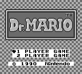
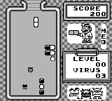

Dr. Tetris (Dr. Mario Game Boy Hack)
This hack swaps the Dr. Mario music and sounds for the Game Boy Tetris ones (No layout adjustments were made, so most music track and sound instances are off.)
Note 1: You will need to patch a Dr. Mario Game Boy ROM using Flips in order to play the hack.
Note 2: This hack contains fast moving images.
DOWNLOAD
 .bps patch file (5.42 KB)
.bps patch file (5.42 KB)
